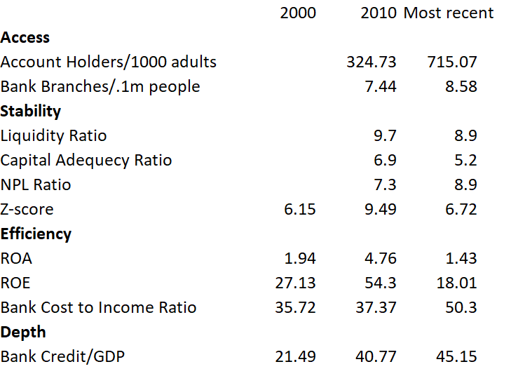

In the last two decades, the number of people taking banking facilities increased really a lot but increase in bank branches wasn't striking. As for the stability of this sector, all the indicators are almost the same as before but for a quick note, non-performing loan increased a bit. A sharp change we find is that the profitability on the part of the bank shareholders came to a fall. To conclude, our banking industry is growing bigger every moment and currently its contribution to private loan is about half of the GDP, which is a lot.